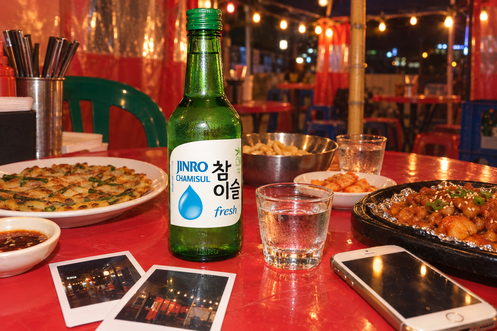
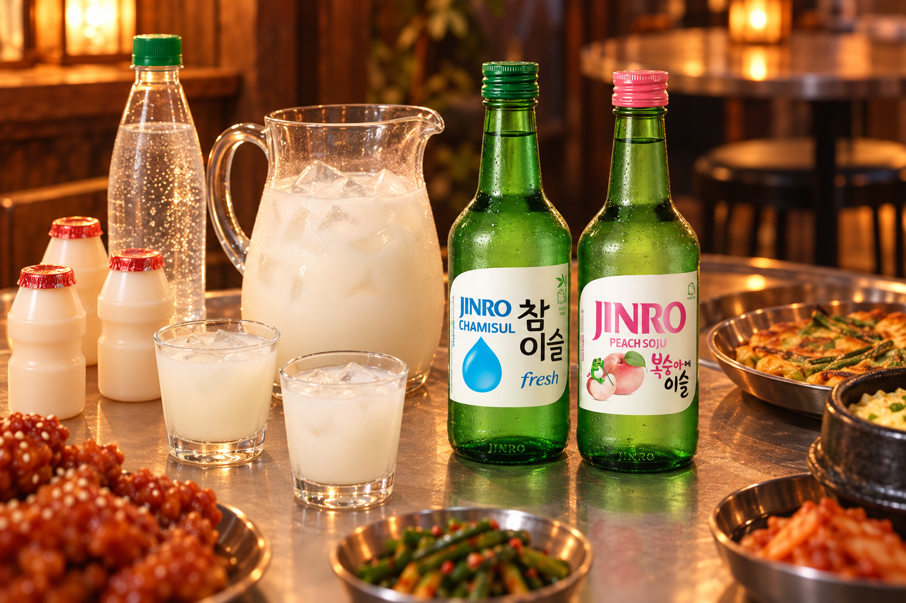
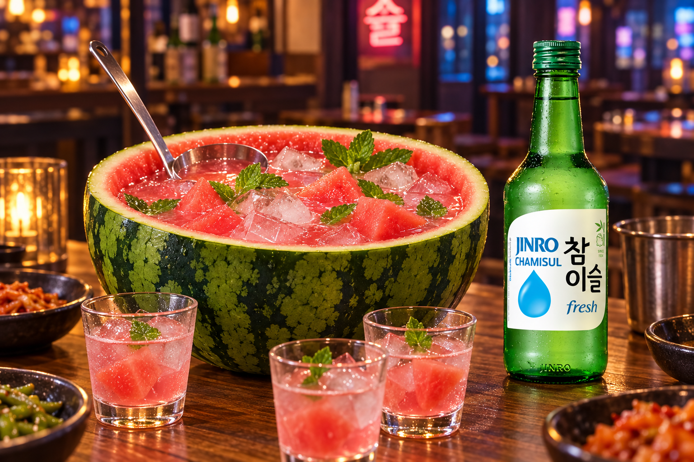
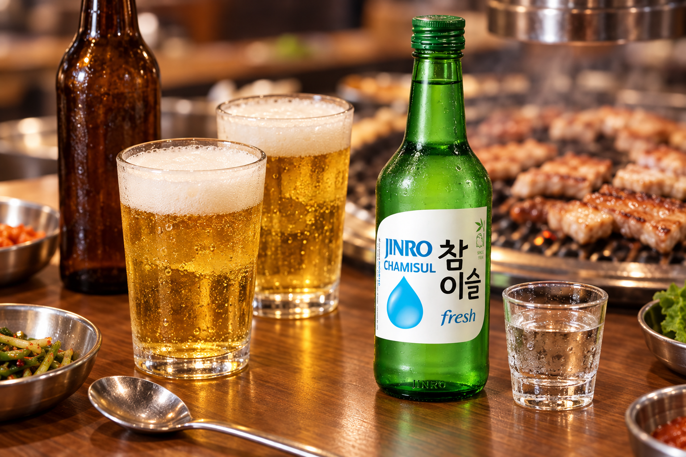

Bring Back 2016: The Soju Moments We All Remember
2026 is the new 2016. Look back at the mood of that year, revisit three soju drinks from the era and see how to make them with JINRO today.
Dog-ear filters. Flower crowns. A Mannequin Challenge at every party. If your feed has been full of throwback photos this year, you already know: 2026 is the new 2016.
The trend took off on TikTok in January, when people started posting their old 2016 photos with captions like “we’re back.” It quickly spread to Instagram, and the throwbacks have kept coming ever since.
Soju was part of that 2016 mood, too. Here is a look back at three soju drinks you may remember from tables and feeds back then, and how to make each one with the JINRO lineup you can find today.

Why Everyone Is Posting 2016 Again
Part of the appeal is the photos themselves: harsh flash, heavy filters and no pressure to look perfect. For many people, 2016 was a time when posting felt casual and fun.
So people are bringing back the songs, filters and party habits of that year. For a lot of them, that includes what was in their glass.
1. Yogurt Soju: The Easy Pitcher Drink
If you went to a Korean bar around 2016, you may remember a pitcher of something milky white in the middle of the table. That was likely yogurt soju.
It is simple: soju, a small Korean-style yogurt drink and lemon-lime soda, mixed over ice. The yogurt drink adds a light sweet-tart flavor, and the soda keeps it fizzy.
To make it today, mix equal parts JINRO Chamisul, yogurt drink and lemon-lime soda in a pitcher with ice. For a fruitier take, swap in JINRO Peach.

2. Watermelon Soju: The One Everyone Photographed
This one was made for the camera. A watermelon is cut in half, scooped out and filled with a watermelon and soju punch, then served with a ladle so everyone can pour their own glass.
Korean bars in cities like New York helped turn it into a social media favorite, and it is still one of the easiest ways to make a table feel like a party.
Blend the scooped-out watermelon, strain it and mix it with JINRO Chamisul Fresh and a splash of lemon-lime soda. Pour it back into the shell with ice and a few watermelon chunks.

3. Somaek: The Classic That Never Left
Some drinks never needed a comeback. Somaek, a mix of soju and beer, was on Korean barbecue tables in 2016 and is still a go-to today.
Pour a shot of JINRO Chamisul into a glass of beer and give it a gentle stir. A common starting point is about three parts soju to seven parts beer, but almost every table has its own ratio.
Some people tap the glass with a spoon to make it fizz up, which is half the fun to watch.

Make It 2016 Again with JINRO
You do not need a time machine to bring back the 2016 mood. Put on a playlist from that year, dig up an old photo filter and pick one of these drinks for the table.
Then make it your own with today’s JINRO lineup. JINRO Chamisul keeps things clean, while fruit flavors such as JINRO Grapefruit, Peach and Strawberry add a fruitier twist. Availability may vary by region.
The photos may look like 2016, but what is in your glass can be all 2026.
For more JINRO stories and drink ideas, visit JINRO Global’s official Instagram, Facebook, and YouTube.
This article is intended for readers of legal drinking age. Please enjoy JINRO responsibly and in moderation, and never drink and drive.